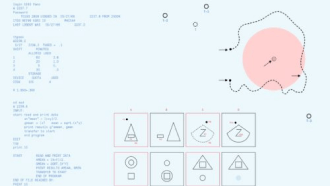
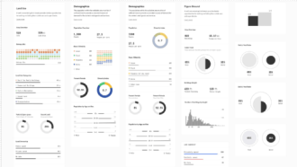
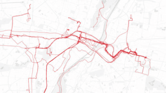
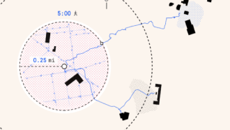
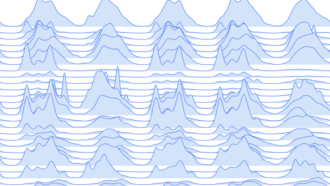
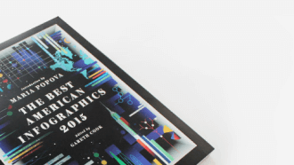

Exploring cities through data analysis and visualization
Morphocode is a design and development firm that uses data to visualize urban dynamics and provide location insights. Our team brings together expertise across architecture, urban planning, and software engineering.
We research, design, and develop
Our portfolio ranges from interactive web maps and information graphics to custom software tools for data analysis and visualization.
View ProjectsLearn with Morphocode
Morphocode Academy is an online school that covers topics in data visualization, creative coding, and urban informatics.
Start Learning
From the blog
-

The power of interactive tools
Tools augment our problem-solving capacity. We rely on them to expand our minds and provide ease, accuracy, and [...]
-

The making of Morphocode Explorer
Over the last year, we’ve been working on a new web tool for interactive data exploration [...]
-

Urban performance measures
Urban performance measures help communities make informed decisions and measure results against goals. [...]
-

The 5-minute walk
The five-minute walk, also known as the “pedestrian shed” is considered to be the distance people are willing [...]
-

Location + time: urban data visualization
The most common ways to visually organize information are based on location and time. In this interactive story, [...]
-

Morphocode in the Best American Infographics
We are extremely happy to be included in The Best American Infographics. The third volume in the series [...]
Start Learning
Get the latest articles, tutorials, and free resources from Morphocode